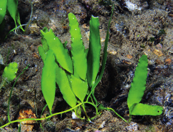
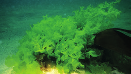
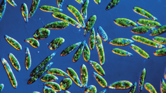
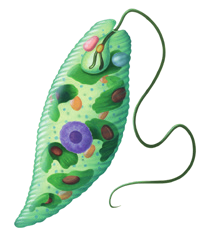
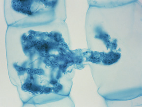
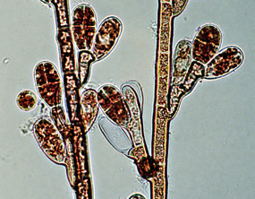

El reino protoctistas incluye seres vivos unicelulares y pluricelulares con células eucariotas. Los organismos pluricelulares de este reino no poseen tejidos diferenciados, ya que todas sus células, salvo las reproductoras, son iguales.
Las algas: protoctistas autótrofos
Las algas son organismos eucariotas autótrofos que pueden ser pluricelulares o unicelulares. Sus células suelen poseer una pared celular fuera de la membrana plasmática y en el citoplasma presentan ribosomas, mitocondrias, vacuolas y cloroplastos.

Algas verdes
Las funciones vitales de las algas
Su nutrición es autótrofa fotosintética gracias a la clorofila, que les permite usar la energía luminosa. El color verde de la clorofila puede estar enmascarado de rojo, pardo o amarillo, debido a la presencia en ellas de otros pigmentos que emplean para captar la luz en zonas poco iluminadas.
Se relacionan con el medio respondiendo a estímulos como la luz y la salinidad. La respuesta más común en las algas unicelulares es el desplazamiento hacia o en contra del estímulo. Las algas pluricelulares responden a la luz aumentando de tamaño más o menos, según las estaciones del año.
Se reproducen asexualmente, ya sea por fragmentación (una porción del alga origina un nuevo individuo) o por esporas (unas células especiales generan nuevos seres). Algas también se reproducen sexualmente.

Algas bajo el agua

Algas microscópicas
Ejemplos de algas
El alga Caulerpa prolifera se multiplica en abundancia por simple fragmentación.
El alga roja Rhodochorton sp. produce esporas en los extremos de sus filamentos.
En Spirogyra un filamento masculino pasa su material genético a uno femenino.

Ilustración de un paramecio

Vista microscópica de células

Vista microscópica de estructuras fúngicas